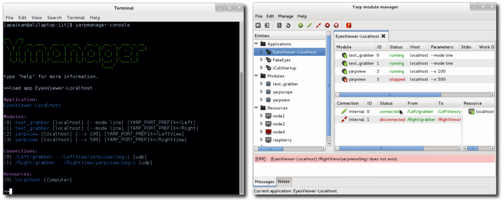

The command-line utility "yarpmanager-console" and its graphical companions "yarpmanager" are tools for running and managing multiple programs on a set of machines.

yarpmanager-console and yarpmanager
Features
- Running, stopping, killing and monitoring multiple programs on localhost or remote machines.
- Establishing port's connections manually and automatically.
- Managing multiple programs which are grouped as different applications.
- Running programs concerning their dependencies.
- Recovering programs from failure.
- Using internal launcher to speed up program execution on localhost.
- Automatically assigning programs to machines using load balancing and smart resource discovery mechanism for improving performance.
- Discovering information and status of machines in cluster of computers (e.g. Hardware, platform, CPU load).
- Allowing users to specify resource dependencies of program using module description file.
- Allowing users to provide information about specific devices (e.g GPU) of machines using resource description file.
- Creating new Application, Module and Resource using XML template file.
- Including multiple instances of an application inside another application.
- Renaming ports name at run time using port prefix mechanism.
- Modifying program's parameters from GUI.
- Modifying and reloading XML description files from GUI.
Some Concepts
- Module, is an executable binary file (program) which is developed using YARP or any other libraries.
- Application, refers to a collection of modules, connections and other applications.
- Resource refers to any physical or logical resources which are needed by module. (e.g Computer, Memory, GPU, Platform)
See application, module and resource for more information on how to use XML model to describe each of these concepts.
Configuration
Default configuration file known as "ymanager.ini" can be automatically loaded by yarpmanager from the same folder running the manager; or it can be indicated by parameter "--from" and "--context", following YARP Resource Finder policies (see The ResourceFinder Class (basic)). Using the configuration files, one can explicitly indicates the paths where yarpmanager should search for applications, resources or modules. If the configuration file is not provided, then yarpmanager will search for the corresponding XML files in the YARP data directories (see YARP data directories).
$ yarpmanager --from <path to my_config_file>
The below example shows the syntax of configuration file:
# Path to the folder which contains application description files
apppath = "./xml/applications"
load_subfolders = yes
# Path to the folder which contains module description files
modpath = "./xml/modules"
# Path to the folder which contains module description files
respath = "./xml/resources"
# Fault tolerance
# parameters: yes|No
watchdog = no
# Module failure awareness (if watchdog is enabled)
# parameters: Ignore|terminate|prompt|recover
module_failure = prompt
# Connection failure awareness (if watchdog is enabled)
# parameters: Ignore|terminate|prompt
connection_failure = prompt
# Automatically establish all connections
# parameters: Yes|no
auto_connect = no
# Appearance (for yarpmanager)
# parameters: No|dark|light
color_theme = dark
# External editor (e.g. gedit, notepad)
external_editor = gvim
Items 'apppath', 'modpath' and 'respath' respectively point to the folder where the XML description files of Applications, Modules and Resources can be found. All description file names must have ".xml" extension. If 'load_subfolders=yes', applications description files will be recursively loaded from sub folders of 'apppath'. Set 'external_editor' to your preferable text editor. It will be used by yarpmanager for editing XML file.
Running examples
First make sure you have a name server running. Open a terminal and type:
$ yarpserver
Using yarpmanager
Open another terminal and try this:
$ cd <path to YARP local repository>/data/yarpmanager/tests
$ yarpmanager-console
>> help
# a list of yarpmanager-console keywords
>> list app
# you should see EyesViewer-Localhost, FakeEyes, ...
>> load app EyesViewer-Localhost
>> run
>> connect
# you should see moving red bar
>> disconnect
>> stop
>> exit
Using yarpmanager
Open another terminal and try this:
$ cd <path to YARP local repository>/data/yarpmanager/tests
$ yarpmanager
- From "Entities" frame, click the triangle beside Applications, then double-click "EyesViewer-Localhost".
- From menu "Manage" press "Run" to run all modules
- From menu "Manage" press "Connect" to establish all connections.
- To terminate application, chose "Manage">"Disconnect" and "Manage">"Stop".
To run "EyesViewer-Cluster" using load balancer you need to have yarprun running as server. Open a terminal and type:
$ yarprun --server /node1
Open another one and type:
$ yarprun --server /node2
Then try this:
$ cd <path to YARP local repository>/data/yarpmanager/tests
$ yarpmanager
- From "Entities" frame, click the triangle beside Applications, then double-click "EyesViewer-Cluster".
- From the right side, right-click on the frame where you can see all modules and form the pop-up menu chose "Assign hosts". You will see that modules will be automatically assigned to available nodes. (here /node1 and /node2)
- From menu "Manage" press "Run" to run all modules
- From menu "Manage" press "Connect" to establish all connections.
- To terminate application, chose "Manage">"Disconnect" and "Manage">"Stop".
- Note
- You can use "Assign hosts" whenever all modules are stopped and connections are disconnected.
Application description file
Application description file is a collection of modules (programs) or other applications and connections.
Here is an example of application description file in XML format:
<application>
<name>ApplicationName</name>
<description>Template Application</description>
<version></version>
<authors>
<author email=""> first author.name </author>
<author email=""> second author.name </author>
...
</authors>
<module>
<name></name>
<parameters></parameters>
<node></node>
<workdir></workdir>
<environment></environment>
<deployer> </deployer>
<display></display>
<stdio></stdio>
<prefix></prefix>
<dependencies>
<port timeout="5.0"></port>
<port timeout="5.0" request="ready" reply="yes"></port>
...
</dependencies>
<ensure>
<wait when="start">10.0</wait>
<wait when="stop">5.0</wait>
</ensure>
</module>
...
<application>
<name>Application_Name</name>
<prefix></prefix>
</application>
...
<connection persist="true">
<from qos="level:high; priority:10; policy:1"></from>
<to></to>
<protocol></protocol>
</connection>
<connection>
<from external="true"></from>
<to></to>
<protocol></protocol>
</connection>
...
</application>
Notes
- In application description file, if you set <node></node> to "localhost", the manager will use an internal module launcher to run the module on localhost.
- Leaving <node></node> empty, later you can use the load balancer to automatically assign module to a node for better performance.
- <prefix> refers to port name's prefix. It will be added to the names of all ports that the module opens. For example, if a module open "/Port1" and <prefix>/MyPrefix</prefix>, after launching the module, the real port name will be "/Myprefix/Port1".
- Other applications can be integrated by indicating their names. Setting <prefix> for an included application, port prefix will be applied to all modules and connections which are not set as external.
- Persistent connection can be created by setting "persist" property of the corresponding connection tags. They are created by using YARP topics as described in Persistent connections and will be removed when the application is unloaded from manager (i.e. closing the application window in yarpmanager).
- The <port> tags inside <dependencies> indicate that the execution of the current module should be postponed until the ports become available. yarpmanager waits for the ports and continuously checks their availability. If one of the required ports is not available within the time indicated by the "timeout" property, the module will not be launched.
- It is also possible to send a specific RPC request to a port to get status about the internal state of a module. This is useful when launching a module should be postponed until other modules get launched and ready. This can be done by specifying the request using "request" property and the expected reply using "reply" property in a <port> tag. The manager sends the request to the relevant port and check if the received reply matches the one indicated in the "reply" property before launching the module. If the reply does not match the expected one, the corresponding module will not launched.
- The <ensure>> and <wait> tags can be used to enforce an arbitrary wait after launching a module. In this case, the manager waits for that specific time to consider the module successfully launched.
- The <display> tag specifies the visibility of the process window:
- --visible_na (default):the window is visible and inactive (it does not get the focus)
- --minimized: the window is minimized
- --hidden: the process is invisible. This option is useful for console/terminal applications. Notice that on the graphical yarpmanager you can see the standard output using the ''attach to stdout'' functionality (right click on the application and select it from the menu).
- It is also possible to configure the Qos properties of a connection directly from the manager. This can be done using the "qos" attribute of <connection> tag or independently using <from> and <to> tags. The Qos properties provided within the <connection> tag will be applied to both side of the connection. The attribute accepts a string in form of multiple pairs of "property:value" which are separated using ";". For example, qos="level:high; priority:10; policy:1" configure the connection packet priority level to 'HIGH' and the scheduling policy/priority of the connection-dedicated thread respectively to 1 (i.e. SCHED_FIFO in Linux) and 10. Alternatively the packet priority level can be configured using "dscp:<value>" or "tos:<value>". Please refer to yarp::os::QosStyle and yarp::os::NetworkBase::setConnectionQos APIs for further information.
Resource description file
The resource description file can be used to provide a general information of the machines that are part of the cluster. In very simple form, the resource description file is a list of the names of machines in the cluster.
Here is an example of resource description file in XML format:
<resources>
<computer>
<name>hostname1</name>
<description>Template resource</description>
<disable>no</disable>
</computer>
<computer>
<name>hostname2</name>
<description>a computer with GPU device</description>
<disable>no</disable>
<gpu>
<name>Tesla C1060</name>
<cores>240</cores>
<frequency>1600</frequency>
<capability>1.3</capability>
<registers_block>128</registers_block>
<thread_block>512</thread_block>
<overlap>yes</overlap>
<global_memory>
<total_space>4000000</total_space>
</global_memory>
<shared_memory>
<total_space>128</total_space>
</shared_memory>
<constant_memory>
<total_space>16</total_space>
</constant_memory>
</gpu>
</computer>
...
</resources>
Notes
- Platform, Memory, Storage and Processor specification will be discovered automatically by yarpmanager; but, peripherals such as GPU should to be specifically introduced.
Module description file
Module description file can be used to provide general information of module and its dependencies. It is mainly used by load balancer to automatically assign machines to module which satisfy the dependencies. By default, if there is no module description, load balancer assumes that the module can be executed on every available machines. Despite it is not mandatory, it is always useful to have XML description of each module which shows how it should be used for application building (e.g parameters, inputs, outputs).
Here is an example of module description file in XML format:
<module>
<name>module_name</name>
<description>Template module</description>
<version>1.0</version>
<arguments>
<param desc="first parameter"> param1 </param>
</arguments>
<authors>
<author email=""> author1 </author>
</authors>
<data>
<input>
<type>DataType</type>
<port carrier="tcp">/portname</port>
<required>yes</required>
<priority>no</priority>
<description></description>
</input>
...
<output>
<type>DataType</type>
<port carrier="tcp">/portname</port>
<description></description>
</output>
...
</data>
<dependencies>
<computer>
<gpu>
<capability>1.3</capability>
</gpu>
...
</computer>
...
</dependencies>
<development>
<header></header>
<library></library>
</development>
</module>
Notes
- <name> should match its executable file name.
- <type> refers to nominal type of data (e.g. ImageFrame, String).
- Required input means that execution of module depends on availability of the input data. Notice that not all the input are required for a module to perform its task (e.g. status request input).
- <priority>yes</priority> forces the execution of module to be delayed until the port become available.
- Physical and logical resource dependencies can be introduced using <dependencies> tag. Dependencies must follow resource conceptional models. Currently available models are 'memory', 'processor', 'storage', 'yarp_port', 'platform' and 'gpu'. All resource dependencies should be introduced inside <computer></computer> tags. Resources inside a <computer> tag, represent conjunctional dependency. Resources from different <computer> tags can be seen as disjunctions. Meaning that, if a module depends on either resource R1 or R2, they can be introduced inside two different <computer> tags. Resource dependencies should be introduced if they are really required. For example, if module's performance drops significantly in case of memory swapping, a memory resource dependency can be introduced with the required memory space.
- In a multi-platform cluster of computers, if a module depends on specific platform (Operating system), <platform> dependency should be introduced.
Resource conceptional model which can be used as module's dependency:
<platform>
<name></name>
<distribution></distribution>
<release></release>
</platform>
<yarp_port>
<name></name>
<yarp_port>
<memory>
<free_space></free_space>
</memory>
<storage>
<free_space></free_space>
</storage>
<processor>
<architecture></architecture>
<cores></cores>
<frequency></frequency>
<model></model>
</processor>
<gpu>
<name></name>
<cores></cores>
<capability></capability>
<registers_block></registers_block>
<thread_block></thread_block>
<overlap></overlap>
<global_memory>
<total_space></total_space>
</global_memory>
<shared_memory>
<total_space></total_space>
</shared_memory>
<constant_memory>
<total_space></total_space>
</constant_memory>
</gpu>
Create new XML description file
yarpmanager allows for creating new application, module and resource description file using predefined templates. To create a new XML file, first make sure you set 'external_editor' to your preferable editor (e.g. gedit, notepad) then
- From "File>New" menu chose "New Application". ("New Module" for module and "New Resource" for resource)
- Chose your application folder and enter proper name (e.g "my-test-app.xml") to save it. The template file will be open using 'external_editor'.
- Modify and save it.
- Open it using yarpmanager.
Notes
- yarpmanager allows for identical application names (they will be listed as MyApp(1), MyApp(2), ...). But it is strongly recommended to have unique proper name for each application. Notice that, duplicate names for modules and resources are not allowed and will be ignored by yarpmanager.
- If you modify the XML description file, you need to "reopen" it. Identically, you can "remove" and "open" it from GUI.
Generate application dependency graph
The arrangement of modules and resources within an application can be visualized as dependency graph. For Instance, dependency graph of application "EyesViewer-Localhost" used in above example is shown below.
As shown in the graph, application "EyesViewer-Localhost" consists of two instances of "FakeEyes" with their relevant modules. Each module is associated with a node marked as "MultipleResource". It is linked to machines which satisfy its requirements. Notice that here, "localhost" is specifically assigned by user to each modules; Thus there is no link to machines "node1" and "node2". The graph is generated in DOT format which can be visualized using Graphviz tools. To generate the graph:
- Open an application using yarpmanager (See above example example_g)
- From "Edit" menu chose "Export graph"
- Give a name (e.g "MyApp.dot") and save it.
Or open an application using yarpmanager (See above example example_y) and type :
>> export MyApp.dot
To visualize the graph, Linux users can open a terminal and try this:
$ sudo apt-get install graphviz
$ dot -Tpdf -o MyApp.pdf MyApp.dot
Windows users can download Graphviz tools from http://www.graphviz.org/Download_windows.php and in windows console type :
C:\...\> dot -Tpdf -o MyApp.pdf MyApp.dot
Frequently asked questions
How to postpone launching a module?
It can very often happen that you need to launch a module after some other modules already launched and are running. This is usually the case where a module needs to access some ports which should be open by other modules. To achieve this behavior, you simply needs to indicate which ports your module needs to be available using <dependencies> tag of the corresponding module in the application description file (see app_notes).
How to quickly launch a single application in command line?
Imagine you need to run a single application (e.g., eyesviewer-localhost.xml) without using Guis. All you need is to use 'yarpmanager-console', give your application description file as its parameter and ask it to run the modules and connect them:
yarpmanager-console --application my-app.xml --run --connect
If you want to run the application without getting blocked in yarpmanager-console, you can ask it to quit after running the application.
yarpmanager-console --application my-app.xml --run --connect --exit --silent
The '–silent' parameter avoids showing the verbose messages. Try 'yarpmanager-console –help' for further information.